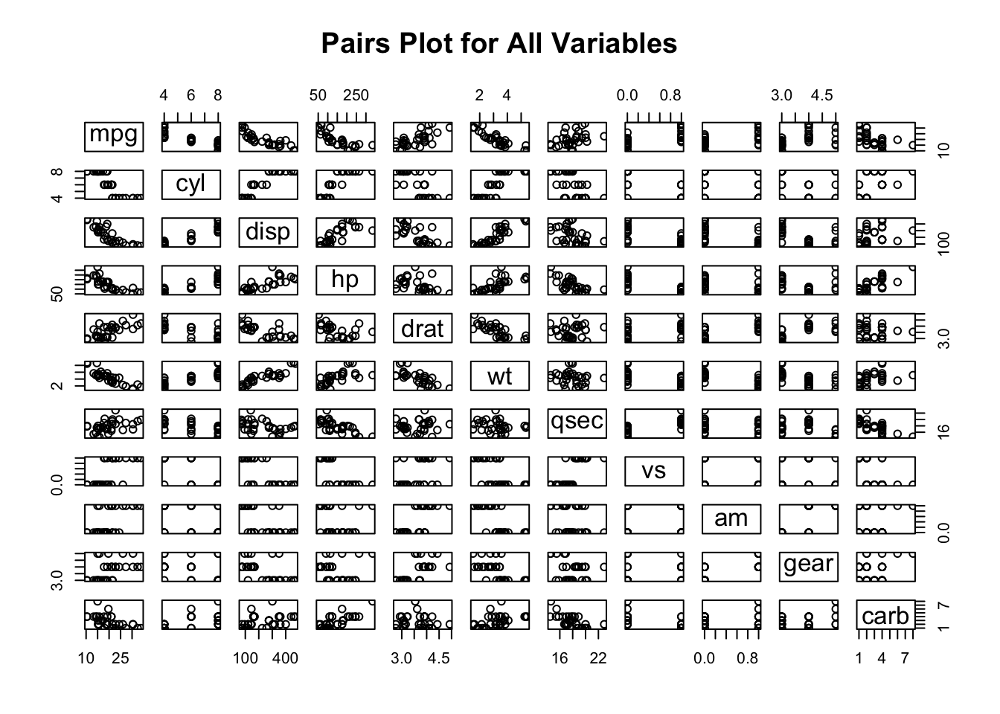

Chapter 3 A Motivating Example
You will need to install and then load the following packages. There will be more as you work through the examples.
library(tidyverse)
library(rpart)
library(caret)
library(pls)
library(mlbench)
library(DataExplorer)3.1 Suggested Workflow
Thus far we haven’t gotten our hands dirty but we’ll need to do that if we want an experiential approach to any of this. It’s useful to have a schematic that outlines the general process. Consider the following workflow. In general this is a solid representation of what one might do as part of building a predictive model.

Let’s keep working with the mtcars data frame:
Motor Trend Car Road Tests
The data was extracted from the 1974 Motor Trend US magazine,
and comprises fuel consumption and 10 aspects of automobile
design and performance for 32 automobiles (1973–74 models).
A data frame with 32 observations on 11 (numeric) variables.
[, 1] mpg Miles/(US) gallon
[, 2] cyl Number of cylinders
[, 3] disp Displacement (cu.in.)
[, 4] hp Gross horsepower
[, 5] drat Rear axle ratio
[, 6] wt Weight (1000 lbs)
[, 7] qsec 1/4 mile time
[, 8] vs Engine (0 = V-shaped, 1 = straight)
[, 9] am Transmission (0 = automatic, 1 = manual)
[,10] gear Number of forward gears
[,11] carb Number of carburetors3.2 Scatterplot
Let’s look at a pairs() plot to see if there are any obvious linear relationships between any of the variables. Some of these variables can be considered as factors or categories (such as cyl, vs, am, gear, and carb) so for now we will exclude them to focus only on the continuous / measured variables.

3.3 Correlations
Let’s look at some correlations to see how we might predict MPG as a function of other variables in the data set. Note that this isn’t an in-depth modeling lecture so we will fast track over deep discussions on how to fully evaluate and diagnose a model emerging from a specific method - although that is important. But, in the interest of motivating a work flow, we’ll simplify some of those discussions for now.
There are some strong correlations here and perhaps a case could be made for collinearity but we aren’t going to get into that right now. We also have variables on different measurement scales but, again, we’ll hold off dealing with that for the moment.
As a preview of the caret package, we’ll use the findCorrelation function to help identify variables that are correlated above a certain threshold. Here, we’ll identify variables that are correlated at a level of 0.7 or above. This function takes a correlation matrix as input. We have a number of variables we might consider removing but, again, we’ll hold off on that for now.
## [1] "cyl" "disp" "mpg" "wt" "hp" "vs" "drat" "am"3.4 Building A Model - In Sample Error
So now we will use the above information to build a linear model using the mtcars data frame. We’ll turn around and use the same exact data frame to test our model - Any resulting error we see will be in sample error and will not generalize well to new data. However, the model will not help us anticipate any out of sample error.
data(mtcars)
# Let's evaluate a basic formula
myform <- formula(mpg~wt)
# Use the built in "lm" function
lm_model <- lm(myform,data=mtcars)
summary(lm_model)##
## Call:
## lm(formula = myform, data = mtcars)
##
## Residuals:
## Min 1Q Median 3Q Max
## -4.5432 -2.3647 -0.1252 1.4096 6.8727
##
## Coefficients:
## Estimate Std. Error t value Pr(>|t|)
## (Intercept) 37.2851 1.8776 19.858 < 2e-16 ***
## wt -5.3445 0.5591 -9.559 1.29e-10 ***
## ---
## Signif. codes: 0 '***' 0.001 '**' 0.01 '*' 0.05 '.' 0.1 ' ' 1
##
## Residual standard error: 3.046 on 30 degrees of freedom
## Multiple R-squared: 0.7528, Adjusted R-squared: 0.7446
## F-statistic: 91.38 on 1 and 30 DF, p-value: 1.294e-10# Do the predictions on the data set used to train the
# model. This isn't what you want to do in the real world
training_preds <- predict(
lm_model,
newdata=mtcars,
type="response"
)So let’s see what this looks like graphically. Remember that we want to be able to compute the Root Mean Square Error for this model:
title <- "lm - mpg~wt"
plot(mpg~wt,mtcars,pch=19,main=title,
ylim=c(min(mtcars$mpg)-5,max(mtcars$mpg)))
abline(lm_model)
grid()
segments(mtcars$wt,training_preds,
mtcars$wt,mtcars$mpg,
col="red",lwd=1.2)
Let’s compute the RMSE for this model. The formula for this is:
\[ RMSE = \sqrt\frac{\sum_i^n(P_i-O_i)^2}{n} \]
## [1] 2.949163We might even want to create a function to do this for future use:
# Lets define a rmse function for future use
compute_rmse <- function(preds,known) {
errors <- preds-known
rmse <- sqrt(mean(errors^2))
return(rmse)
}
compute_rmse(training_preds,mtcars$mpg)## [1] 2.949163Is this good ? Bad ? Just average ? Well we don’t really know. One good thing is that the metric is in terms of the predicted variable, mpg, so it can easily be interpreted.
However, unless someone has specified a tolerance level for the RMSE we don’t know if we have something that can be extended to other car types. We also could experiment with other regression formula to see if the RMSE goes down (or up).
3.5 Out Of Sample Data
Now let’s repeat this exercise by generating a linear model on a subset of the mtcars data frame and then apply that model to the remaining data. In modeling parlance this is known as having a “training” and “test” data set.
The idea here is to build a model using say the first 21 rows of mtcars (a training set that is roughly 65% of the data) and then use a test set, rows 22 - 32 of mtcars, as input to the model to determine how well the model performs.
Remember - we want to minimize the RMSE. The first 21 rows are outlined in green and rows 22-32 are outlined in red. This means we are training on a subset of the data and we hope that any model we build thereon will be extensible to the holdout or test data frame
lm_model_train <- lm(myform,data=mtcars[1:21,])
# Do the prediction on the test set
test_preds <- predict(
lm_model_train,
newdata=mtcars[22:32,],
type="response"
)
(test_rmse <- compute_rmse(test_preds,mtcars[22:32,]$mpg))## [1] 3.286759We trained the model on the first 21 rows of the data frame which might contain some outliers (or not). The RMSE got larger ! Does this mean the model is “bad” ? Maybe, maybe not.
One thing we could do is to experiment with another split of the data, perhaps in a different proportion (e.g. 80/20) or maybe even a series of splits to see if we can get an idea of how widely the RMSE varies. Here we create a sample of 80% of mtcars to create a training set.
# Shuffle the row numbers of the data frame
(train_index <- sample(1:nrow(mtcars),nrow(mtcars)*.80))## [1] 21 5 3 25 9 28 2 19 7 17 22 1 14 15 29 32 26 30 8 12 6 18 16 24 10# Get 80% of the records from the data frame
train_df <- mtcars[train_index,]
# We have approx 80% of the data in train_df
nrow(train_df)## [1] 25## [1] 7Now do the modeling
train_model_lm <- lm(myform, data=train_df)
# Test the model on the test / holdout data frame
test_pred <- predict(
train_model_lm,
newdata=test_df,
type="response"
)
(test_rmse <- compute_rmse(test_pred,test_df$mpg))## [1] 3.3531723.6 Other Methods ?
Could we improve the situation by using another modeling method ? This would be something that we could try with out much effort. We just have to identify an appropriate method. Let’s look at a Random Forest method called ranger.
library(ranger)
# Call the ranger function
my_rpart <- ranger(mpg ~ ., data = train_df)
# Make some Predictions
pred <- predict(my_rpart, test_df)
my_rpart_preds <- pred$predictions
# What is the RMSE
compute_rmse(my_rpart_preds,test_df$mpg)## [1] 2.417757Well the computed RMSE with the ranger method seems to be better in the sense that it is smaller than with the lm function. We might be on to something or maybe we just got lucky. We need a better way to proceed - something with more rigor.
3.7 Summary
Aside from trying an alternative method to lm what we have done here is to sample some portion of the original mtcars data frame to use as a training set while holding out the rest of the data to use as a test data to see how well our model performed. We could repeat this (re)sampling activity multiple times to better train our data over different segments or “folds” of data so any model we ultimately generate will “learn” as much from the data as it can without modeling any “noise”.
There are various methods for doing this including K-Fold Cross Validation and Bootstrap Resampling. Let’s dig in a little deeper into these methods because they help us build models that might offer more robust performance when applied to new data.